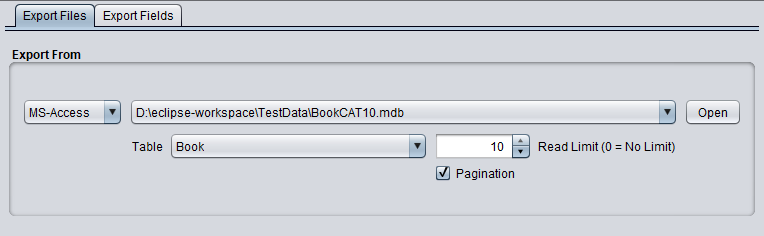
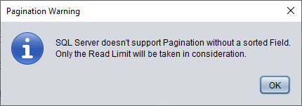

Export From SQL database (SQLite, ProgresSQL, MariaDB etc.)

Additional Fields
- Table
If your database has more than one table then you can select in this comboxbox the table to export.
- Read Limit
The Read Limit allows you to constrain the number of rows returned by a query. A limit of 0 returns all rows.
For example, a query may return one million rows. However, if you just need the first 10 rows then you can set
the Read Limit to 10.
- Pagination
Returns all records in a query, but reading the rows from the table is done in blocks of "Read Limit" rows.
For example, if the Read limit is set to 10 and the table contains 30 records to read then DBConvert sends three
queries to the database. First query returns row 1 to 10; the second rows 11 to 20 and the third query row 21 to 30.
Important: In SQL Server we can use Pagination only, if the query is sorted. If no sort fields are defined then
you'll see the following warning message.
